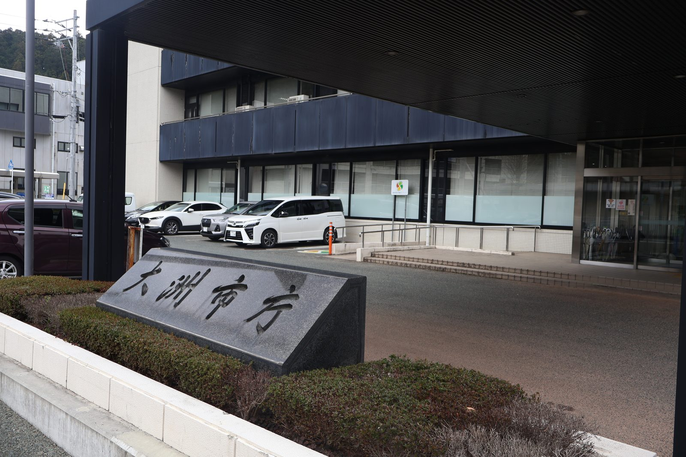

大洲の視点 ・ 出典: 大洲市パブリックコメント実施結果ＰＤＦ/大洲市人口ビジョン（平成28年３月）/令和８年度当初予算の概要

大洲市が「第３次大洲市総合計画」の基本構想（案）についてパブリックコメントを実施した。
2035年までの９年間、市が何を目指すかを決める、一番大きな計画である。
その結果がこれだ。
人口３万7,725人の市で、５人。１人あたり平均4.2件を書いた計算になる。
ただ、21件の中身をひとつずつ読んでいくと、印象がかなり変わった。この５人は、相当に鋭いところを突いていた。
唯一計画を動かしたのは、意見番号２だった。質問はこうだ。
「総合計画最終年となる2035年の目標人口が『人口ビジョン』の社人研準拠推計より低くなっているのは、政策効果を反映した積極的な目標となっていないのではないか。」
「市の目標が、国の推計より低いのはおかしい」という指摘である。
目標というのは、何もしないより高い数字を置くものではないのか、と。
市の回答はこうだった。
「人口ビジョン推計値における2035年時点の人口30,671人に基づき、2060年の目標人口を達成するために必要な最低限必要な人口として30,000人と設定していました。ご指摘のとおり、目標人口は各種施策を実施して達成すべき数値を掲げるのが適当であり、令和７年国勢調査の速報集計結果も勘案し、総合計画最終目標人口を31,000人に見直すよう調整を進めます。」
「ご指摘のとおり」で始まっている。2035年の目標人口が30,000人から31,000人へ、1,000人引き上げられた。21件のうち、この１件だけが数字を動かした。
正直に書くと、この変更が意見だけの成果かは分からない。回答にも「令和７年国勢調査の速報集計結果も勘案し」とあり、ちょうど新しい統計が出るタイミングと重なっていた。
それでも、市が公式資料の中で「ご指摘のとおり」と書いて数字を書き換えたことは、記録として残る。
21件の先頭に置かれていたのが、この質問だ。
「合計特殊出生率『2.05』という極めて高い数値を設定した根拠は何か。」
合計特殊出生率2.05とは、女性１人が生涯に２人強の子どもを産む状態を指す。
人口が長期的に減らなくなる水準（人口置換水準）がおよそ2.07なので、ほぼそこに並ぶ数字だ。日本全体では1970年代半ば以降、一度も届いていない。
これに対する市の回答が、この資料で一番読み応えがあった。
「愛媛県が実施した少子化に関する意識調査（令和７年２月）によると、希望する子どもの人数は『２人』の割合が42.0％と最も高く、６割以上の人が『２人以上の子ども』を理想としています。
しかしながら、本市の合計特殊出生率は1.26にとどまっており、この乖離は『産みたくても産めない』状況であることを示しています。」
2.05という数字は、予測でも願望でもなく「市民が理想としている子どもの人数」から逆算されたものだった。
市民の６割以上が２人以上を望んでいるのだから、それが叶えられれば2.05になる、という組み立てである。
そして、市は自分の現在地が1.26だとはっきり書いている。理想の2.05と現実の1.26。
この差を市は「産みたくても産めない状況」と表現し、原因を「経済的不安と心理的・肉体的不安」としている。
目標値の非現実性を突かれて、市が「これは達成できる予測ではなく、市民の希望が叶った場合の数字です」と正面から答えている。
この受け答えは誠実だと思う。同時に、目標と現実に0.79の開きがある計画を９年間の指針にする、ということでもある。
21件の中で、一番驚いたのが意見番号３だった。
「2060年の目標人口『20,000人』に、受動的な推計以外の根拠はあるか。」
2060年の目標人口が、20,000人になっている。
これは大きな変更だ。10年前の平成28年３月に市が作った「大洲市人口ビジョン」を開いて確かめた。そこには４パターンの推計が並んでいる。
| 推計パターン | 2060年の人口 |
|---|---|
| パターン１（社人研準拠。今の傾向がそのまま続いた場合） | 19,842人 |
| パターン３ | 27,665人 |
| パターン４ | 30,172人 |
| パターン２（県準拠。出生率が回復し社会移動が均衡した場合） | 30,695人 |
市はこのうち高いほうを目標に置き、「2060年に30,000人」を掲げていた。
国立社会保障・人口問題研究所の推計より約１万人多い数字である。
その目標が、第３次総合計画では20,000人になった。社人研準拠の19,842人と、ほとんど同じ水準だ。
10年かけて、市は「国の推計より１万人多く」という目標を事実上取り下げたことになる。
しかも20,000人という数字ですら、控えめな見積もりではない。
市の回答によれば、これは「合計特殊出生率2.05と社会増減の均衡を条件に推計を行い」出したものだという。
出生率が1.26から2.05まで回復し、転出と転入が釣り合うという前提を置いて、ようやく２万人ということになる。
根拠として市が挙げているのは、市民アンケートで８割以上が「大洲に愛着があり、これからもずっと住み続けたい、当分は住み続けたい」と答えたこと、高校生アンケートで75.2％が「大洲に愛着がある」、30.4％が「将来的には大洲に戻りたい」と答えたことだ。
この30.4％という数字は、そのまま読むと厳しい。７割の高校生は、戻ってくるつもりがないと答えている。
市の回答も「高い転出意向がある一方で」と、そこを隠さずに前置きしている。
せっかく人口ビジョンを開いたので、答え合わせをしてみた。
人口ビジョンには、第２次総合計画の目標年である2026年（=今年）の推計値も４パターン載っている。
実績は、一番低いパターン１（社人研準拠）のすぐそばにある。市が目標にしていたパターン２～４の推計からは、1,700人から2,300人ほど下振れしている。
ここは物差しの違いに注意が要る。人口ビジョンの推計は国勢調査人口をもとにしたコーホート要因法によるもので、実績として挙げた37,725人は住民基本台帳の人口だ。
住民基本台帳のほうが一般に多めに出るため、国勢調査ベースで比べればさらに下振れしている可能性が高い。
それでも、市の独自推計に届いていないという方向は変わらない。
10年前に置いたベストケースの目標は、10年で外れた。2060年の目標が３万人から２万人に下がったのは、その答え合わせの結果でもあるのだと思う。
反映されなかった意見も、内容は幅広い。実際に出ていたものをいくつか挙げる。
ダーチャ、漕艇場の国際大会、勾配3/100の平坦地分析、香害。
５人しかいないのに、視野の幅が広い。普段から市政を見ている人でなければ出てこない具体性がある。
これらへの回答の多くは、「基本計画に位置付ける」「今後の施策を検討する上での参考とさせていただきます」という言い回しだ。
基本構想は方向性を示すもので、具体策は次に作る基本計画に書く、という整理になっている。
形式上は筋が通っているが、意見を出した側から見れば「先送り」と読めなくもない。
なお意見20への回答には、「ふるさと納税や公民連携の手法を活用した民間資金の活用など、多様な財源の確保に取り組むことが重要」という一文が入っていた。
市も財源確保の主力としてふるさと納税を意識していることが読み取れる。
この点は大洲市のふるさと納税4.6億円。そのうち2.2億円は経費で消えていたのほうで詳しく書いた。
５人という数字だけを見て「市民は無関心だ」と書くのは、たぶん早い。パブコメが市民参加の唯一の窓口ではなかったからだ。
意見５（「共創のビジョンとするなら、市民や事業者はどう参画するのか」）への回答に、こう書かれている。
「計画策定に当たっては、市民公募によるワークショップや分野別ワークショップを実施し、いただいたアイデアやご提案を踏まえ、基本構想（案）を作成しました。」
パブコメの前に、市民公募のワークショップと分野別ワークショップが行われていた。
そこで出た意見はすでに案の中に取り込まれているので、パブコメ段階では新たな指摘が出にくくなる。
実際、令和８年度当初予算には「市民参画型合意形成支援業務委託料55万５千円」が計上されていて、市民参加そのものにお金がかけられている。
それでも、比較すると寂しい数字ではある。同じ大洲市が令和６年に実施した「長浜港内港埋立事業」のパブリックコメントには、29人から64件の意見が集まった。人数で約６倍、件数で約３倍だ。
市全体の９年間を決める計画より、港ひとつの埋立事業のほうが多くの人を動かした。
ここには一般論がありそうで、「自分の生活が具体的に変わる話」でないと、意見を書こうという気持ちにはなりにくいということなのだと思う。基本構想は抽象的で、読むだけでも骨が折れる。
ちなみに、第３次総合計画の策定には令和８年度当初予算で「総合計画策定事業1,966万２千円」が計上されている（策定支援業務委託料1,702万８千円ほか）。
2,000万円近くをかけて作る計画の、最後の意見募集に集まったのが５人という対比になる。
調べ終えて、最初とは逆の感想になった。
５人しか出さなかったパブコメで、目標人口が1,000人動いた。
そして、その１件がなければ「2035年の目標人口が国の推計より低い」というねじれは、そのまま９年間の計画に載っていたことになる。
さらに言えば、意見が出されなければ、市が「合計特殊出生率1.26」「産みたくても産めない状況」と公式資料に書くこともなかった。
回答は質問があって初めて生まれる。この21件の質疑応答は、それ自体が計画の一部として公開されている。
パブコメは、たいてい誰にも読まれずに終わる。それでも、A4で３ページのこのＰＤＦは、大洲市が自分の目標の非現実性を認めた記録として残った。５人が書かなければ、存在しなかった記録である。